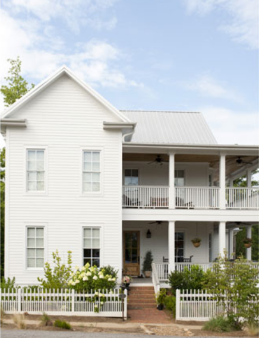

.png)
.PNG)
.PNG)
.PNG)
.PNG)
.PNG)
.JPG)
.JPG)
.PNG)
.PNG)



When we last talked here, I was telling you about my trip to Serenbe a few years ago. I commented that at the time of our visit, I was afraid that the little town wasn’t going to “make it,” but since that time they have had some really MAJOR good publicity. Today, I want to show you some of the reasons for that publicity. These homes have brought scores of people to tour them. I don’t know if the “tourists” are buying real estate in the community, but the number of homes available for sale in Serenbe is quite low compared to what it once was. So I feel like they are doing very well now.
One of the reasons for great publicity has been this Bosch Net Zero model home in Serenbe that features many of the Bosch energy saving products – their appliances, a geothermal heat pump, and a solar energy system – among other things. Additionally, they have built a Bosch Experience Center in Serenbe to not only showcase these products, but to also be a place to discuss sustainability research and education. Sounds like a good place for a field trip for high school and college students to me!
Not only has the home had all these great energy saving features, but it has also been decorated by Ballard Designs – making it a very popular place to tour.
In fact, it looks just like you jumped right into a Ballard Designs catalog. I love those wicker chairs at the dining table above and the green fabric in the bedroom below.
I am not sure, but I believe the tours for it closed Labor Day weekend, but it IS for sale if you are interested. Here is a view of the living room from the stairs. I like this brown and green color scheme. It seems very fitting for Serenbe.
And here is another view of the porch. serenbecommunity.com
serenbecommunity.com
Another home that has generated a lot of interest in Serenbe is the HGTV Green Home that was built there.
It is quite a bit more modern than the other tour house (at least in my mind it is.)
I really don’t care for the kitchen and dining area – just too modern for my tastes, but there are some very nice gathering spaces in the home that I could be quite happy in – like this room that they are calling “the Georgia room”….
and this colorful living space… hgtv.com
hgtv.com
and this great outdoor gathering space. (I really prefer their outdoor spaces over their interiors.)
This one is my favorite of all the outdoor areas. Isn’t that stonework beautiful?
This is my favorite of the interior rooms – a positively precious child’s bedroom!
On June 27th of this year, the home was given away to Mary Jones from Katy, Texas. The “green home” from HGTV for next year is being renamed as the “Smart Home” – I assume because of the integrated Smart Technology being planned for it. It is being built in Paradise Key, near Jacksonville Beach, Florida – 5 blocks from the Atlantic Ocean. Maybe one of us will be the lucky winner!
And now to the last of the “famous” homes in Serenbe.
There are different “sections” within the Serenbe community, and one section is named The Nest Cottages. Each cottage has a smaller footprint than most of the rest of the development. Each is also highly energy efficient and makes use of natural landscaping. The Nest Cottage model home is an Earthcraft home built to showcase that energy efficiency with its geothermal heating and cooling system. Here are some photographs of the interior of the model home.
Again, it is a mix of modern with traditional and farmhouse all blended together.
And if all these homes don’t make you want to visit or live in Serenbe, then let’s talk food for a minute. The Southern Chefs series is an unbelievable experience if you are a foodie. For one weekend you stay at the Serenbe Inn, cook in Marie Nygren’s kitchen alongside 9 other students under the direction of one of the best chefs in the South. In the past, they have featured Nathalie Dupree, Virginia Willis, Frank Stitt, Hugh Acheson (whose cookbook just won the James Beard Foundation award), Steven Satterfield, Anne Quatrano, and others. The series is sold out for 2012, and they have just released the calendar for 2013 – which sells out rather quickly. So if you are interested, just click here for more info.
I hope you have enjoyed our virtual tour of Serenbe, and maybe one day soon you will get to visit it in person. Or better yet, you will get to live there and enjoy the community full time. 🙂 I hope we get to make a roadtrip back there again soon.
Until next time….


.PNG)
Wow, I cannot get over these houses. The first two white farmhouses are seriously my dream house, especially the one with the double porches. I keep forgetting you’re in Georgia…we’re not that far from one another! We should meet up one day and collaborate on something 🙂
————————————————————————
Lindsay – Those farmhouse style homes are my favorite too. You are right, we should plan on a collaboration sometime. That would be fun!
Kelly
Kelly,
This looks like such a charming community. I love the Ballard house the best, but I confess, that outdoor BBQ area on the second home is amazing.
Karen
———————————————————————–
Karen – Charming is a good word to describe Serenbe! So glad you liked the Ballard house. Perhaps they should have built a stone outdoor kitchen on the back of it too.
Kelly
Oh my! I love these houses, particularly the Nest Cottage (doesn’t the name evoke everything it is???). I could see living out my dotterage there, happily oblivious of the rest of the world! I also am in love with the stone outdoor kitchen of the HGTV house. Oh my!
Thanks for sharing, Kelly 🙂
Cath
————————————————————————-
Cath – I agree! We have talked about building a smaller house (or at least I have proposed the idea 🙂 ) and one of those Nest Cottages would be perfect. I love that name too. We could put a stone outdoor kitchen on it and have the best from both of the homes. You could come and visit us! 🙂 (I guess we would have to be on the coast so that you could sail your boat there.)
Kelly
Thanks for sharing about this unique community. I love the idea of communities with a theme. I live 20 minutes from Celebration, and have had fun exploring their streets and parks. I’ve also been to a community that was a preserve filled with wildlife, though their emphasis was not on the homes, it was still interesting.
———————————————————————–
Mora – Oh my word! My family is a Disney fanatic family, and we have loved visiting Celebration! I am going to have to see where my photos are from it. You are very lucky if you are that close to Disney World. My kids would love for you to adopt them! ha ha.
Thank you for adding to the conversation on Serenbe here!
Kelly
LOVE the space which was decorated by Ballard…I think it was featured on Southern Hospitality. And I totally agree about the more modern spaces; generally not my preference, especially that kitchen!
———————————————————————–
Aimee – That Ballard House IS very well done, and I really do love the colors and patterns in it. Yes, Rhoda did do a tour of it, and she has done the Southern Living farmhouse also. Great tours! Glad to know I am not the only that is not sold on that kitchen! At least we know there is a variety of styles in Serenbe – something for everyone.:)
Kelly
Wow! I want to go there. A lot to see and it seems a lot of good things to eat.
———————————————————————-
Minnie – It makes for a great weekend visit, and there is really a lot of good food to eat there. The bakery alone could feed me for several days!
Kelly
What an interesting community! Thanks for sharing!
———————————————————————–
Barbie – Glad you liked Serenbe! It is a fun place to visit (and probably a great place to live too!)
Kelly